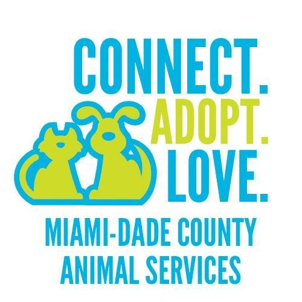
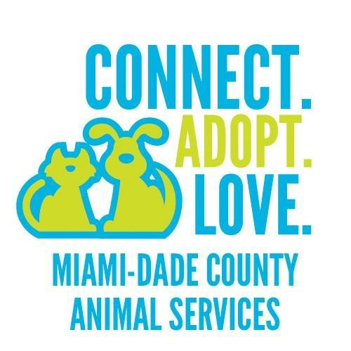
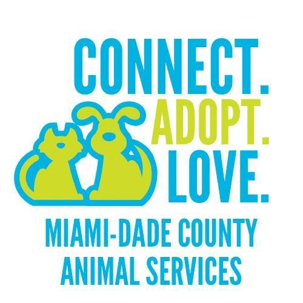

Picking the Right Dog for You
Where to Adopt
 



If you're in the Miami area, I highly recommend Miami Dade Animal Services. It is the government shelter meaning that they are a kill shelter so it's imperative that people try to adopt these dogs before they're euthanized. Furthermore, they give your dog all of its shots and spaying and neutering are included in the price of adoption which is only $60!
I recommend going on a weekday as they become extremely busy on weekends. The adoption process goes as follows:
- Go to the front desk and take a number. This will be the order in which you're called to see if the dogs you liked are available for adoption
- Now, start looking at the dogs. There are 6 different rooms in which the dogs are kept. Rooms A-C contain small-medium size dogs. Rooms D-G contain bigger dogs.
- Every dog will have their own ID card that states their name, approximate age, health status, and a unique ID code. Take a picture of the code as that is what you will bring to the front desk to see if they're available for adoption
- Once you've seen all the dogs and you're confident you have pictures of all the ID numbers of the dogs you liked, return to the front desk and wait for your number to be called to see which ones are available
- You'll get the option to play with the dogs you liked and see if you want to bring Fido home!
Tips for Adopting
With so many dogs of different ages and breeds, the shelter can be overwhelming. Follow these quick tips to ease your adoption process:
- Do your research!
It's important to research breeds and characteristics to identify the dog that will best fit your lfiestyle before you arrive at the shelter. Although most shelter dogs will be mutts, it's still improtant to have an idea of the temperament of the breeds the dogs are mixed with! - Check the shelter requirements! The shelter requires that you bring a license and proof of address, so make sure you grab some mail with your name on it. Make sure that your building allows pets because some shelters call the landlords to confirm.
- Bring any other pets you might have to the shelter You're going to want to make sure that your new dog gets along with your other pets before you bring him home!
- Keep an open mind! If you're going to be picky, the shelter might not be the best place for you to find a dog. It is rare to find a purebred or newborn puppy at a shelter. Even though you may be deadset on a small dog, check out the big dogs too. You never know who you might fall in love with.
Tips for Saving $
Dogs can be very expensive, so its important to maximize your budget.You already saved around $1000 by adopting instead of buying a dog but there are still more ways to save:
- Shop online for pet food! Pet food can be very expensive but grocery store brands tend to be more expensive for less product, with a 12 lb bag costing around $20 on average. I order a 60 lb bag of Duke's dog food on Amazon for $45. It may seem like a lot but that bag lasts a few months.
- Groom at home! If you have a bathtub, you can save yourself around $70 a month by grooming your dog at home. Simply buy doggy shampoo and soap and give your pal a bath at home instead of taking him to get groomed.
- DIY Dog Toys!
Dog toys can be expensive, so save yourself some money and make your own. Your pup won't be able to tell the difference and your wallet will thank you. This website has a list of different household items that can be made into toys.
Tips for Training
Bringing home a rescue can be overwhelming. They can either be fully trained or know nothing. Either way, patience is the most important thing when it comes to training your new friend. Keep in mind that the stress of living in a shelter and whatever the dog may have been through in his past can make him less confident in new surroundings.
- Assume your new dog has never had training Treat your rescue the same way you would reat a new puppy. Even if your dog seems to be trained, he probably needs a refresher especially as he adjusts to his new home.
- Get on a schedule! Dogs like having a routine. Establish a routine for feeding, walking, playtime and bedtime so that your dog can begin to adjust to his new life. Make sure that this routine is complementary to your schedule because you're going to need to be consistent with it.
- Bring treats! Most dogs are incredibly food motivated. Bring treats that you know your dog likes. Give your dog a treat every time he successfully follows a command. Positive reinforcement will be the best thing while training a rescue!